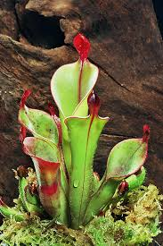

Sarraceniaceae
North American Pitcher Plant Family
Sarraceniaceae is a family of carnivorous perennial herbs native to North and South America. They are famous for their highly modified leaves, which form specialized pitcher traps to capture and digest insects and other small prey, primarily for nutrient acquisition in poor soils. The pitchers often have intricate features like lids, nectar guides, and slippery surfaces. Flowers are typically large, nodding, 5-merous, and often possess a unique, umbrella-like style (Sarracenia). The family belongs to the order Ericales.
Overview
The Sarraceniaceae family comprises three distinct genera: Sarracenia (pitcher plants of eastern North America), Darlingtonia (the Cobra Lily of the Pacific Northwest), and Heliamphora (sun pitchers of the Guiana Highlands in South America). All members are carnivorous, having evolved elaborate pitcher leaves as passive pitfall traps to supplement nutrient uptake from the typically wet, acidic, nutrient-poor environments they inhabit, such as bogs, seepages, and tepui summits.
The trapping mechanism involves luring prey (mostly insects) with nectar and visual cues, causing them to fall into the pitcher filled with digestive fluids (containing enzymes secreted by the plant or produced by symbiotic bacteria). Downward-pointing hairs and slippery surfaces prevent escape. This carnivorous strategy is a remarkable adaptation allowing these plants to thrive where mineral nutrients are scarce.
Many Sarraceniaceae species are popular in horticulture among carnivorous plant enthusiasts. However, they face significant threats in the wild due to habitat destruction (wetland drainage), pollution, and over-collection, making many species endangered or vulnerable.
Quick Facts
- Scientific Name: Sarraceniaceae
- Common Name: North American Pitcher Plant Family (also Sun Pitchers for Heliamphora)
- Number of Genera: 3 (Sarracenia, Darlingtonia, Heliamphora)
- Number of Species: Approximately 32
- Distribution: North America (E USA/Canada, Pacific NW) and South America (Guiana Highlands).
- Evolutionary Group: Eudicots - Ericales
- Habitat: Nutrient-poor wetlands (bogs, fens, seepages), savannas, tepui summits.
- Nutrition: Carnivorous (pitcher traps).
Key Characteristics
Growth Form and Habit
Carnivorous perennial herbs, growing from underground rhizomes.
Leaves
Leaves are highly modified into specialized pitcher traps, typically arranged in a basal rosette. Pitchers are tubular, trumpet-shaped, or urn-shaped structures designed to capture prey. They often feature:
- A lid or hood (Sarracenia, Darlingtonia) that prevents rainwater dilution and may aid in luring/trapping.
- Nectar glands, especially around the pitcher mouth, to attract insects.
- Downward-pointing hairs and slippery waxy zones inside the pitcher to prevent escape.
- A pool of liquid at the bottom containing digestive enzymes or symbiotic bacteria.
Some species also produce non-carnivorous, flattened, leaf-like structures called phyllodia, especially during certain seasons. Leaves lack stipules (exstipulate).
Stems
The vegetative stem is typically a short, underground rhizome. Flowers are borne on erect, leafless flowering stalks called scapes.
Roots
Fibrous root system, adapted to wet, acidic, nutrient-poor substrates.
Sexuality and Inflorescence
Flowers are typically borne solitarily (though sometimes few in a cyme in Heliamphora) at the apex of a long, erect scape. Flowers are usually perfect (bisexual).
Flowers
Flowers are usually large, showy, nodding (hanging downwards), and actinomorphic (radially symmetrical), typically 5-merous.
- Sepals: 5, free, often colored (greenish, reddish, yellowish), and persistent in fruit.
- Petals: 5, free, often large and pendulous, sometimes covering the reproductive parts (Sarracenia), colored (yellow, red, pink, purple). Petals are reduced or absent in some Heliamphora.
- Androecium (Stamens): Stamens are numerous (many, typically 50+).
- Ovary: Superior, composed of 3 or 5 fused carpels, forming a 3- or 5-locular ovary. Placentation is axile, with numerous ovules per locule.
- Style/Stigma: Highly distinctive and variable by genus. In Sarracenia, the style is expanded into a large, persistent, umbrella-shaped structure, with small stigmas located at the tips of the 5 'spokes'. In Heliamphora, the style is simple with a 3-5 lobed stigma. In Darlingtonia, the style has complex appendages.
Fruits and Seeds
The fruit is a dry, loculicidal capsule, splitting open along the locule walls to release numerous seeds. Seeds are small, often numerous, and sometimes winged.
Carnivory
Plants produce digestive enzymes (proteases, phosphatases, etc.) secreted into the pitcher fluid to break down captured prey, or they host symbiotic bacteria that perform digestion. Nutrients, especially nitrogen and phosphorus, are absorbed from the digested remains.
Field Identification
Identifying Sarraceniaceae is generally straightforward due to their unique carnivorous pitcher leaves:
Primary Identification Features
- Habit: Carnivorous perennial herb with leaves in a basal rosette.
- Leaves: Modified into distinctive pitcher traps (tubular, trumpet-shaped, or urn-shaped), often with lids/hoods.
- Flowers: Large, nodding, usually solitary on a leafless scape, 5 sepals, 5 large petals (usually), numerous stamens.
- Style (esp. Sarracenia): Often large and umbrella-shaped.
- Habitat: Nutrient-poor wetlands (bogs, fens, seepages), pine savannas, or tepui summits in North or South America.
Secondary Identification Features
- Pitcher Details: Presence/absence of wings, shape of lid/hood, coloration patterns.
- Phyllodia: Presence of non-carnivorous, flattened leaf structures (in some species/seasons).
- Flower Color: Yellow, red, pink, purple, or white depending on species.
Seasonal Identification Tips
- Year-round Features: Pitchers are often persistent year-round (though may die back in winter in colder climates). Rhizomes are perennial.
- Flowering Season: Typically spring or early summer. The large, distinctive flowers are key identifiers.
- Fruiting Season: Capsules develop after flowering and persist on the scapes.
Common Confusion Points
Distinguishing Sarraceniaceae from other pitcher-forming or carnivorous plants:
- Nepenthaceae (Tropical Pitcher Plants): Found in the Old World tropics (Asia, Madagascar). Pitchers develop at the tips of tendrils extending from flattened leaves. Flowers are small, unisexual, lack petals, and are borne in racemes or panicles. Different order (Caryophyllales).
- Cephalotaceae (Albany Pitcher Plant): Endemic to SW Australia. Small plant with complex pitchers formed near the base, distinct from normal leaves. Flowers small, 6-merous, lack petals. Different order (Oxalidales).
- Droseraceae (Sundews): Carnivorous herbs with sticky, glandular tentacles (flypaper traps), not pitcher traps. Flowers usually 5-merous but different structure. Different order (Caryophyllales).
- Bromeliaceae (Tank Bromeliads): Some form water-holding tanks with their leaf rosettes that can trap insects, but they lack specialized pitcher structures and digestive enzymes (though some nutrient absorption may occur). Different order (Poales).
The combination of herbaceous habit, basal rosette of true pitcher leaves (often lidded), large solitary nodding flowers on scapes with numerous stamens and often unique styles, and American distribution is diagnostic for Sarraceniaceae.
Field Guide Quick Reference
Look For:
- Carnivorous herb
- Leaves modified into pitcher traps
- Pitchers often with lids/hoods
- Basal rosette habit
- Flowers large, nodding, solitary on scape (usually)
- 5 sepals, 5 petals (usually)
- Stamens numerous
- Style often umbrella-shaped (Sarracenia)
- Habitat: Bogs, seepages (Americas)
Key Variations:
- Pitcher shape and size
- Lid/hood morphology
- Flower color
- Style shape (by genus)
Notable Examples
The three genera represent distinct evolutionary lines within the family:

Sarracenia purpurea
Purple Pitcher Plant
Widespread across eastern North America. Known for its squat, urn-shaped pitchers with an upright, open lid that collects rainwater. Digestion relies heavily on symbiotic bacteria in the water pool. Flowers are typically deep red or purple with the characteristic umbrella-like style.

Darlingtonia californica
Cobra Lily
Endemic to mountain seepages in northern California and southern Oregon. Pitchers are uniquely shaped like striking cobras, with a hooded dome, translucent 'windows' to confuse prey, and a forked 'tongue' appendage. Flowers are yellowish-green.

Heliamphora nutans
Sun Pitcher
One of several Heliamphora species endemic to the high-altitude tepuis of the Guiana Highlands in South America. Pitchers are generally simpler, often funnel-shaped with a small nectar 'spoon' at the back, lacking a true lid but having a drainage slit. Flowers often white or pinkish, sometimes lacking petals.
Phylogeny and Classification
Sarraceniaceae belongs to the large eudicot order Ericales. This order includes diverse families like Ericaceae (heaths), Primulaceae (primroses), Theaceae (tea), Sapotaceae (sapodilla), Ebenaceae (ebony), Actinidiaceae (kiwifruit), and Balsaminaceae (impatiens).
Within Ericales, Sarraceniaceae is part of the non-asterid group. Its exact sister relationship is still somewhat debated, but molecular studies consistently place it close to Actinidiaceae (Kiwifruit family) and Roridulaceae (Dewstick family). These three families often form a clade, which is in turn related to Ericaceae. This placement indicates that the evolution of pitcher carnivory in Sarraceniaceae occurred independently from pitcher traps in Nepenthaceae (Caryophyllales) and Cephalotaceae (Oxalidales), representing a striking example of convergent evolution.
Position in Plant Phylogeny
- Kingdom: Plantae
- Clade: Angiosperms (Flowering plants)
- Clade: Eudicots
- Clade: Asterids
- Order: Ericales
- Family: Sarraceniaceae
Evolutionary Significance
Sarraceniaceae is a key family for studying plant evolution:
- Evolution of Carnivory: Provides a model system for understanding the genetic and morphological changes involved in evolving complex pitfall traps for nutrient acquisition.
- Convergent Evolution: The independent evolution of pitcher traps in Sarraceniaceae, Nepenthaceae, and Cephalotaceae is a classic example of convergence driven by similar environmental pressures (nutrient-poor habitats).
- Adaptive Radiation: The diversification of pitcher shapes and trapping strategies within Sarracenia and Heliamphora illustrates adaptive radiation in response to different prey types or environmental conditions.
- Biogeography: The disjunct distribution between North and South America (with Darlingtonia isolated in the Pacific NW) raises interesting questions about the family's historical dispersal and diversification.
- Conservation Biology: Many species are highly threatened, making the family a focus for conservation efforts related to habitat preservation and understanding ecological requirements.